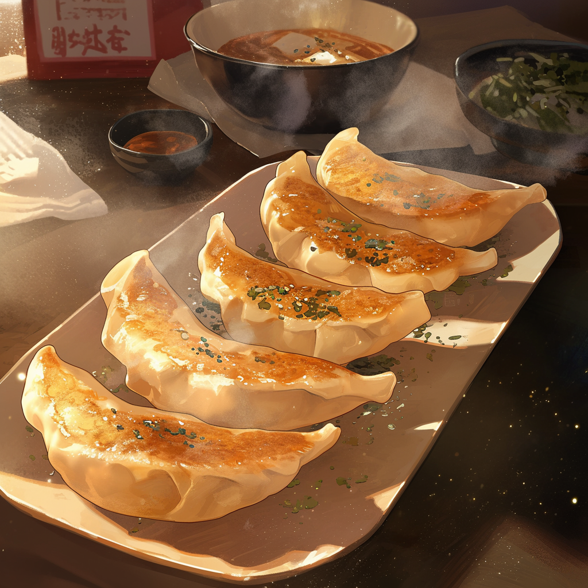

Home
Potsticker Dumplings

Description
The combo of a lush, juicy pork filling and crispy golden bottoms is so divine that stopping at one is impossible! The crescent-shaped beauties are also said to bring good luck and prosperity for the New Year because they look like the golden ingots (a form of currency) of ancient China.
And as for the meaning of the spicy dipping sauce? Well, we just like it spicy!
If you're left with any extra filling, just form into patties and pan fry for a delicious burger.
Ingredients
For the dough:
- 300g plain flour
- 220mL boiling water
- Pinch of salt
For the filling:
- 300g pork shoulder or minced pork
- 1/2 tsp baking soda
- 1 tsp corn flour
- 1.5 tsp salt
- 1 tsp sugar
- Pinch of white pepper
- 3 tbsp cold water
- 1 tbsp rice wine ('Shaoxing' rice wine is the best if you can get your hands on it!)
- 1 tsp dark soy sauce
- 1 tsp light soy sauce
- 2 tbsp sesame oil
- 200g bok choy, finely chopped
- 2 spring onions, finely sliced
- 2 tsp ginger, finely diced
- 1 clove garlic, finely diced
For the dipping sauce
- 1 tsp sesame oil
- 2 tbsp light soy sauce
- 1 tsp chilli oil
To cook
Steps
- Using a pair of chopsticks or a fork, mix the flour, salt and boiling water in a large bowl. When the dough has come together into a rough ball shape, remove from bowl and knead for about 10 minutes knead until smooth. Divide the dough into two even pieces then use your thumbs to make a hole in the middle of each piece before stretching them out into bagel shapes with even thickness all around. Cover the ‘bagels’ with cling film and allow to rest for 20 minutes.
- If using pork loin, ground the meat by cutting into 1cm pieces before chopping into a fine dice - a cleaver or heavy knife will make this step easier. If using mince, simply pop into a large mixing bowl. To the ground pork, add baking soda and corn flour, seasonings, and all of the liquid ingredients. Stir vigorously in one direction until all the liquid is absorbed and the pork begins to bind to itself. Mix in the bok choy, spring onions, ginger and garlic.
- Lightly flour your work surface. Divide the each piece of rested wrapper dough into 16 even-sized pieces. The easiest way to do this is to cut the ‘bagel’ in half so you end up with two sausages of the same size. Give the sausages a quick roll so they are about even in thickness along their entire length. Line the two long sausages up lengthways and make a cut in the middle to create four mini sausages. Now line the four mini sausages lengthways to form a roughly square shape, before cutting through all four sausages three times to form 16 small pieces of dough. This will ensure that each piece of dough is a similar size, leading to equal-sized dumplings.
- Lightly toss the dough pieces in plain flour. Place a piece onto the work surface with its cut side down, and flatten with a floured palm. Roll each piece of dough into a thin disc, roughly 8cm in diameter.
- Place a heaped teaspoon of filling into the centre of each wrapper. Fold over into a half moon shape. Cradle the wrapper in one hand and use the other hand to create pleats along the edge furthest away from you, pinching the two edges together after each pleat as you go, to create a crescent shape. Avoid getting any filling on the edges and be sure to pinch firmly as you pleat to create a good seal. (See the video for a visual guide to potsticker folding.)
- Cook the dumplings in two batches of 16. Heat the oil in a large frying pan over medium heat. Fry the dumplings flat side down for about 2 minutes until a golden crust forms on the bottom. Add the cold water and immediately cover with a lid (or a heavy plate if your pan doesn’t have a lid). Let the steam cook the dumplings for 8 minutes or until all the water has evaporated, before removing the lid and allowing the dumplings to cook for a further 1 minute until they lift off from the bottom of the pan easily. You might need a spatula to help them along if they are a little sticky, being careful not to break the wrapper. Repeat with the second batch.
- While the dumplings are cooking, prepare the spicy soy sauce by mixing sesame oil, soy sauce, and chilli oil.
- Serve the dumplings in a big pile, making sure to show off the golden bottoms. Drizzle the spicy soy sauce on top, or serve on the side for dipping.